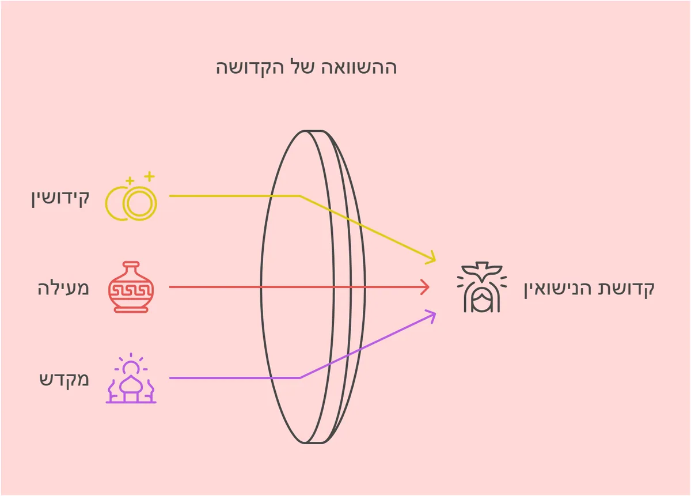

עומק הקדושה בקידושין: בין קידוש ה' למעילה בקודש
הנה דבר מופלא מתגלה לנו בלשון הקודש שבחרו חז"ל. כאשר חכמינו ז"ל באו לתת שם למעשה האירוסין, לא הסתפקו בלשון של קניין או התקשרות גרידא, אלא בחרו דווקא בלשון "קידושין" - מלשון קדושה והתעלות.
העומק שבקידושין
כשאיש מקדש אישה, אין זה רק מעשה משפטי של יצירת קשר. בעצם המעשה הזה הוא מרומם את הקשר ביניהם למדרגה של קדושה. כמו כלי שרת שנתקדשו לעבודת המקדש, כך האיש והאישה מתקדשים זה לזו בקדושה עליונה.
המבט ההפוך: מעילה בקודש
ומה נורא הדבר שכאשר חלילה נפגם קשר זה, התורה משתמשת בלשון החמורה ביותר - "מעילה". לא סתם בגידה או הפרת אמונים, אלא מעילה בקודש ממש. כי אכן, הקשר הזה הוא בבחינת קודש קודשים.
ההקבלה המופלאה
והדברים מאירים: כשם שבמקדש, המועל בהקדש פוגם בקדושה עצמה, כך הפוגם בברית הנישואין פוגם בקדושה העליונה שהושרתה בקשר זה. לא בכדי נקט הכתוב לשון "ומעלה בו מעל" - כי באמת דומה הדבר למעילה בקודשי שמים.
הלקח לדורות
מכאן נלמד יסוד גדול: כל זוג הבא להינשא צריך לדעת שאינם רק כורתים ברית אישית ביניהם, אלא נכנסים תחת כנפי השכינה ומתקדשים בקדושה של מעלה. ומתוך כך תבוא היראה והאהבה לשמור על קדושת הברית הזאת לעד.
האין זה מופלא לראות כיצד בחירת המילים של חז"ל מאירה לנו את כל עומק הקדושה הטמונה בנישואין?